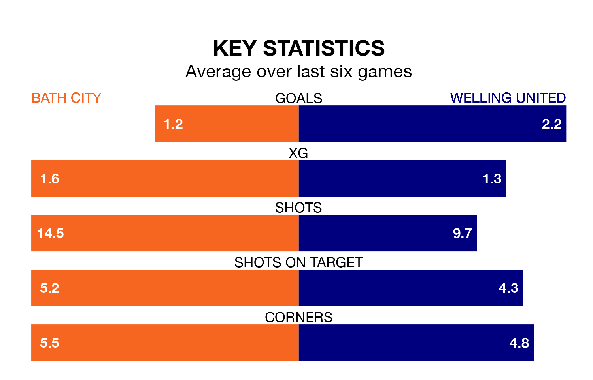

Welling United travel to the Twerton Park Stadium for Saturday's match against Bath City looking to bounce back from defeat last time out in National League North and South.
The Wings, who sit zero in the league after 22 games, fell to a 2-0 home defeat to Eastbourne Borough on December 16.
They face a Bath side who secured a draw in their last match, a 0-0 tie with Dover Athletic, and who sit 15th in the table.
With 39 goals in 22 games so far this season, Bath are scoring more than average in the league with 1.8 goals per game. And they are conceding fewer than average, letting in 28 goals at a rate of 1.3 per game.
Welling, meanwhile, are below average scorers, with 1.3 goals per game, compared to a league average of 1.4. They have conceded 1.9 goals per game.
In Scott Wilson, City have one of the league's sharpest shooters so far this season. He has notched 11 goals in 20 appearances, to sit fifth in the scoring charts.
United's top scorers, with five goals each, are Kain Adom and Tristan Abrahams.
The Romans are in disappointing form in National League North and South, with one win and three draws from their last six games.
With two wins and a draw over that period, the Wings's form is slightly better – they have taken seven points from 18, compared to the home team's six.
In the last five years, Bath and Welling have played each other on seven occasions. Bath won three of them, Welling two, and they drew twice.
On average, the Romans scored 1.3 goals and the Wings 0.9 in those matches.
Their last meeting was on September 9, when Bath won 1-0 away.
Updated: 15:16, 21/12/23